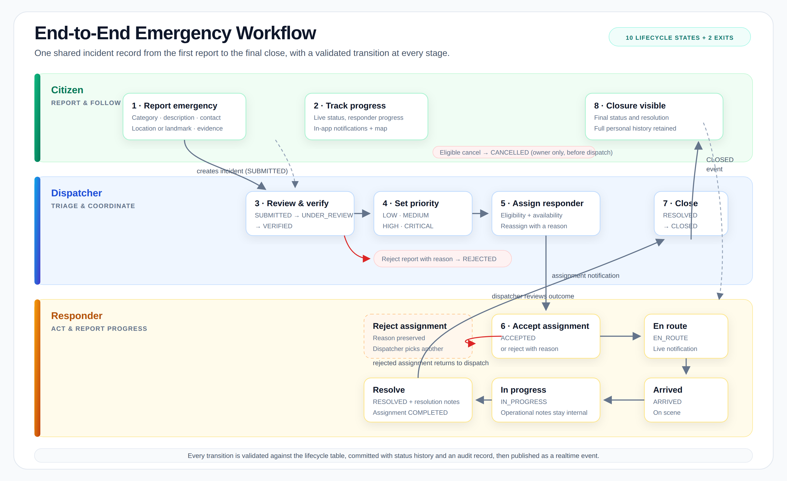
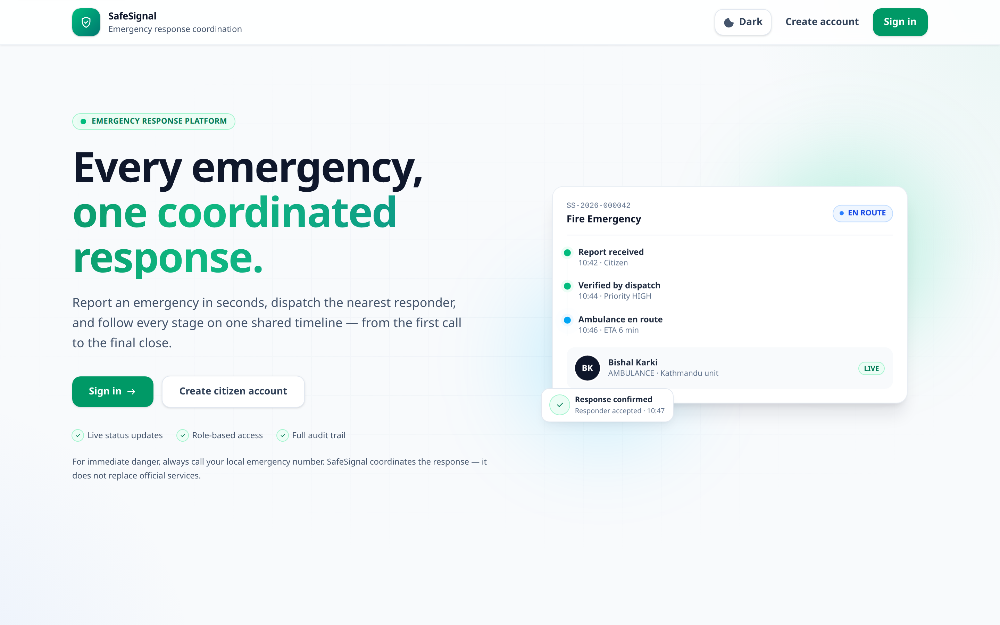
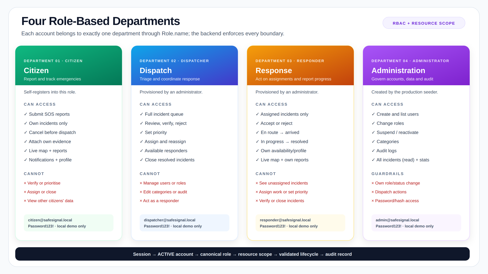
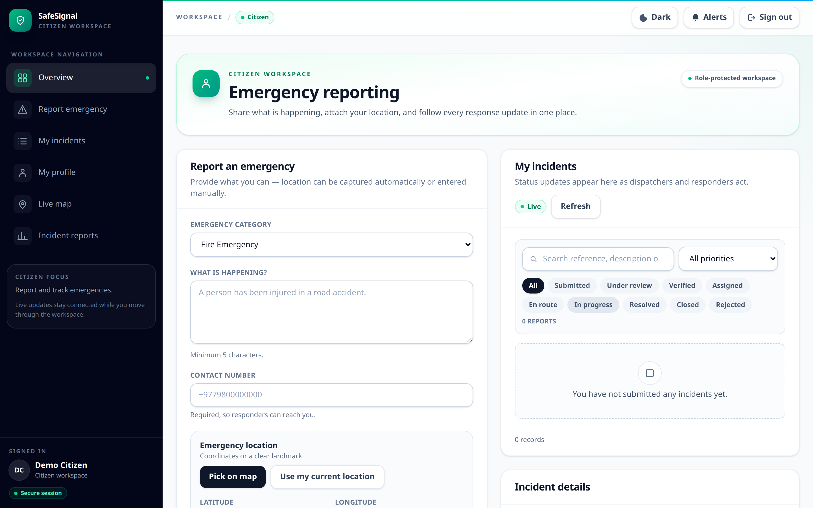
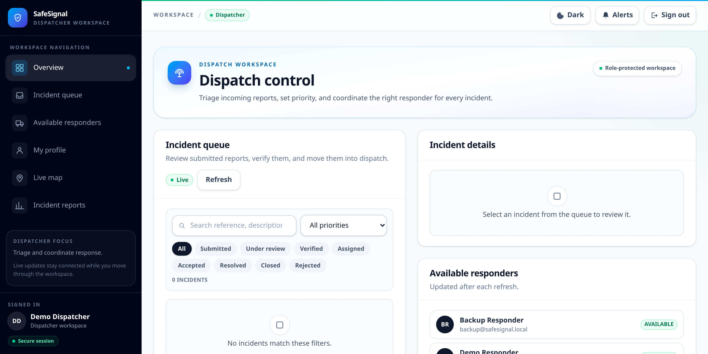
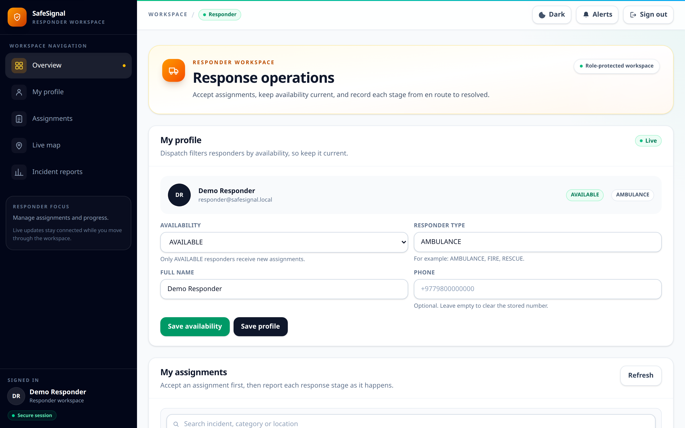
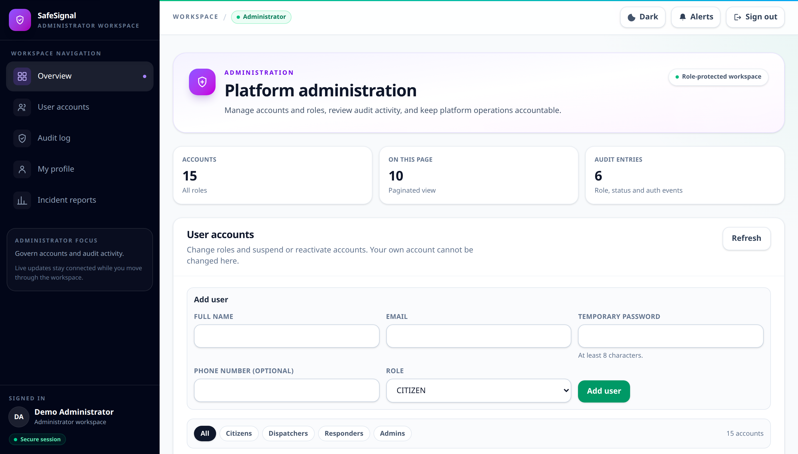
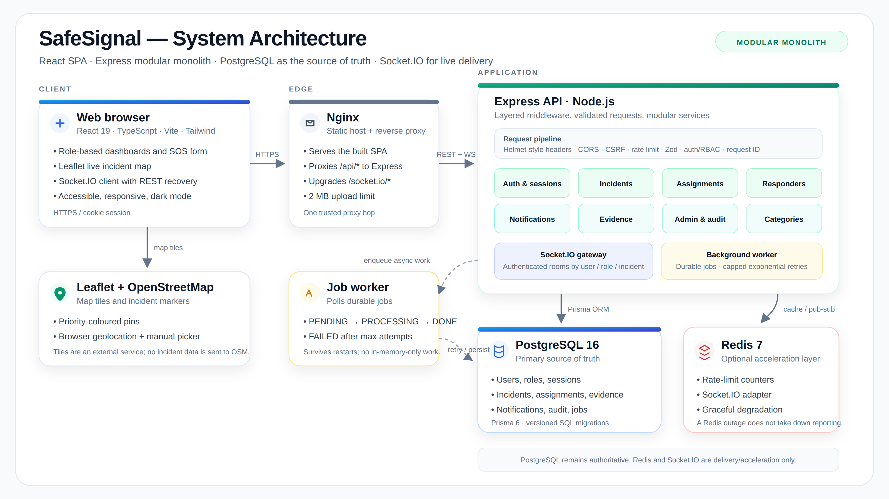

Document Control & Contents
main working treeContents
- 1 · Executive Summary2
- 2 · Project Overview3
- 3 · The Problem4
- 4 · The Proposed Solution4
- 5 · Core Features6
- 6 · Departments & Access7
- 7 · Product Walkthrough9
- 8 · System Architecture11
- 9 · Data, Real-Time & Reliability12
- 10 · Security & Privacy13
- 11 · Quality & Verification14
- 12 · Limitations & Future Work15
- 13 · Conclusion16
- Appendix · Setup & Access Reference17
1 Executive Summary
SafeSignal is a full-stack web application for reporting emergencies and coordinating the response around one shared incident record. It gives each participant exactly the workspace and data they need: citizens report and track, dispatchers verify and assign, responders act and update progress, and administrators govern accounts, reference data and audit activity.
The project addresses a practical coordination problem. Emergency information is commonly spread across calls, messages and verbal handovers. Different people hold different versions of the same incident, nobody can see the full timeline, and the final outcome is rarely captured in one traceable place. SafeSignal replaces that fragmentation with a structured lifecycle enforced by the backend and visible to every authorized participant.
The implementation is deliberately a modular monolith: one Express API, one React single-page application, one PostgreSQL source of truth, Socket.IO for live delivery, Redis as an optional acceleration layer, and a durable background worker for work that must not be lost. This keeps the system understandable and deployable while preserving clear module boundaries for future growth.
At a Glance
| Dimension | Summary |
|---|---|
| Product type | Web-based emergency reporting and response coordination platform. |
| Primary users | Citizen, Dispatcher, Responder and Administrator — four role-based departments. |
| Core workflow | Report → review → verify → prioritise → assign → accept → en route → arrived → in progress → resolve → close. |
| Source of truth | PostgreSQL. Real-time events are a delivery mechanism, never the system of record. |
| Frontend | React 19, TypeScript, Vite 7, Tailwind CSS 4, Leaflet, Socket.IO client. |
| Backend | Node.js 24, Express 5, TypeScript, Zod 4, Prisma 6, Socket.IO 4. |
| Infrastructure | PostgreSQL 16, Redis 7, Nginx, Docker Compose. |
| Verification | Integration tests, coverage, Playwright E2E, latency check, typecheck, lint, format, CI. |
2 Project Overview
SafeSignal is designed for controlled demonstration, testing and project evaluation. Its purpose is to show how a single, well-structured workflow can replace fragmented emergency coordination without pretending to be an official dispatch service.
2.1 What the project is
SafeSignal is a responsive web platform with four authenticated workspaces built on one shared data model. A citizen submits an emergency report with a category, description, contact information and a location. The report becomes an incident with a human-readable reference number and a complete status history. A dispatcher reviews it, sets the priority, and assigns an eligible responder. The responder accepts the assignment and reports each stage of the response. The dispatcher reviews the outcome and closes the incident.
Every important action is authorized by the backend, written inside a database transaction where consistency matters, and recorded in an audit log. The frontend is a consumer of those rules, not the place where they live.
2.2 Objectives
- Give citizens a simple, fast emergency reporting experience.
- Give dispatchers one queue for review, priority and assignment.
- Let responders manage availability and report progress.
- Preserve incident, assignment and audit history.
- Enforce role and resource-level access on the server.
- Deliver live updates without losing persistent state.
- Provide maps, notifications and downloadable reports.
- Demonstrate secure, testable full-stack engineering.
2.3 Scope of the MVP
| Included in the implemented MVP | Explicitly outside the MVP |
|---|---|
| Registration, login, logout, secure sessions and profile management. | Direct integration with police, ambulance, fire or rescue dispatch systems. |
| Citizen SOS reporting, location capture, evidence and cancellation. | SMS or email notification delivery. |
| Dispatcher verification, rejection, priority, assignment and closure. | Guaranteed responder availability or response times. |
| Responder acceptance, progress, resolution and availability. | Multi-region routing, advanced GIS or predictive analytics. |
| Real-time updates, notifications, maps and incident reports. | Production-grade high availability, multi-tenancy or external agency onboarding. |
| Administrator user, role, status, category and audit management. | Mobile native applications and third-party identity providers. |
3 The Problem
Emergency coordination fails quietly when information is fragmented. The problem is rarely a lack of effort; it is a lack of one shared, trusted record that every participant can act on.
3.1 Fragmented communication
A report may begin as a phone call, continue in a messaging app, and finish as a verbal handover. Each channel holds part of the story. Details are repeated, lost or contradicted, and no participant can confidently answer the basic questions: what happened, who is handling it, and what is the current status?
3.2 No shared source of truth
When the incident record lives in several places, the operational picture diverges. A dispatcher may believe a responder is en route while the responder has already arrived. A citizen may have no way to know whether the report was received, verified or assigned. Reports and statistics become unreliable because they are reconstructed after the fact rather than captured as the work happens.
3.3 Weak accountability and reporting
Without a structured history, it is difficult to determine who verified a report, who assigned a responder, why an assignment was rejected, or when an incident was resolved. That weakens accountability and makes process improvement guesswork.
3.4 Practical consequences
| Problem | Operational impact |
|---|---|
| Incident details are spread across channels | Repeated questions, incomplete reports and slower triage. |
| Responder availability is unclear | Assignments go to the wrong person or remain unassigned. |
| Citizens cannot see progress | Duplicate reports, uncertainty and loss of trust. |
| Assignment history is overwritten | Rejection reasons and reassignment decisions disappear. |
| Outcomes are not captured consistently | No reliable record for review, reporting or improvement. |
4 The Proposed Solution
SafeSignal introduces one coordinated workflow around one incident record. Each role sees the same truth through the lens it is authorized to use, and every transition is validated before it becomes real.

4.1 One shared lifecycle
An incident moves through a defined sequence. Direct API requests cannot skip stages or force an invalid transition; the lifecycle rules are checked in the service layer before the database is changed.
4.2 Two records, one truth
Incidents and assignments are separate records. An incident describes the emergency and its lifecycle; an assignment describes who was asked to respond, when, and with what outcome. Reassignment creates a new assignment instead of overwriting the previous one, so the operational history remains intact.
4.3 Designed for imperfect conditions
Idempotent reporting
An optional idempotency key prevents a retried SOS from creating a duplicate incident. The unique index resolves concurrent retries.
Transactional changes
Status changes use conditional updates and transactions. A stale or conflicting transition is rejected instead of partially applied.
Reconnect recovery
Socket.IO delivers live updates, but the client reloads authoritative state through REST after reconnecting. The database remains the source of truth.
Durable background work
Notification work that fails inline is queued in PostgreSQL and retried by a worker with capped exponential backoff.
5 Core Features
The product is organized around six user-facing capabilities. Each is backed by a real API, authorization rules, persistent state and an audit trail — not only a frontend screen.
1 · Emergency SOS reporting
Citizens choose a category, describe the emergency, provide contact details and share coordinates or a clear landmark. Browser geolocation and a map picker are supported, with manual entry as the fallback. Optional supporting evidence can be attached.
2 · Live incident tracking
A Leaflet/OpenStreetMap view shows permitted incident locations with priority-coloured markers, status and responder progress. Live events refresh the view; REST reload restores state after a disconnect.
3 · Dispatch management
Dispatchers work a single queue: review, verify or reject with a reason, set priority, inspect responder availability, assign or reassign, monitor progress and close resolved incidents.
4 · Responder operations
Responders manage availability and profile details, accept or reject assignments, and report each stage from en route to resolved with resolution notes. Only their own assigned incidents are visible.
5 · Notifications and live events
In-app notifications and authenticated Socket.IO rooms inform the right users about new incidents, assignments, status changes and resolutions. Delivery failure cannot undo a committed operation.
6 · History, reports and audit
Incident statistics, category/priority/status breakdowns, recent records and CSV export give an operational view. Status history and audit logs preserve who did what, when and to which record.

5.1 What makes the feature set coherent
The six features are not independent demos. They share the same incident identity, the same lifecycle rules and the same authorization model. A notification references the same incident that dispatch sees; the map plots the same coordinates the citizen submitted; the report counts the same records the responder updated. That shared record is what turns separate screens into a workflow.
6 Departments & Access
Department table: an account belongs to one department through Role.name (CITIZEN, DISPATCHER, RESPONDER, ADMIN). This keeps the MVP simple while still giving each department a distinct workspace, navigation and backend permission set.

6.1 Department summary
| # | Department | Role code | Primary responsibility | Demo account |
|---|---|---|---|---|
| 01 | Citizen | CITIZEN | Report emergencies and track personal incidents. | citizen@safesignal.local |
| 02 | Dispatch | DISPATCHER | Triage reports, set priority and coordinate assignments. | dispatcher@safesignal.local |
| 03 | Response | RESPONDER | Accept assignments and report response progress. | responder@safesignal.local |
| 04 | Administration | ADMIN | Govern accounts, roles, categories and audit activity. | admin@safesignal.local |
Demo password for all seeded local accounts: Password123!. The seeder also provisions backup@safesignal.local as a second responder. Production uses seed-production.ts and never creates demo accounts.
6.2 Access matrix
| Capability | Citizen | Dispatcher | Responder | Administrator |
|---|---|---|---|---|
| Register / sign in / manage own profile | YES | YES | YES | YES |
| Submit emergency report | YES | NO | NO | NO |
| View incidents | OWN | ALL | ASSIGNED | ALL · READ |
| Review / verify / reject report | NO | YES | NO | NO |
| Set incident priority | NO | YES | NO | NO |
| Assign / reassign responder | NO | YES | NO | NO |
| Accept / reject assignment | NO | NO | YES | NO |
| Update response progress / resolve | NO | NO | YES | NO |
| Close resolved incident | NO | YES | NO | NO |
| Cancel eligible own incident | YES | NO | NO | NO |
| Attach / remove evidence | OWN | ANY | NO | NO |
| Manage users, roles, status | NO | NO | NO | YES |
| Manage categories / view audit logs | NO | NO | NO | YES |
Administrator Access in Detail
The administrator department is a governance role, not a super-dispatcher. It manages the platform and its accountability records while operational incident actions stay with dispatch and response.
What an administrator can do
| Area | Implemented access |
|---|---|
| User accounts | List and filter accounts by role with pagination; create an account in any of the four roles; correct permitted profile fields (fullName, phone). |
| Role management | Change another user's role. The user's live socket is disconnected so the new role's rooms apply on reconnect. |
| Account status | Set ACTIVE, INACTIVE or SUSPENDED. A non-active status revokes all active sessions and disconnects live connections immediately. |
| Self-protection | An administrator cannot change their own role or account status through these endpoints. |
| Categories | List active categories (and inactive ones for administration), create categories, rename or re-describe them, deactivate or reactivate them. Existing incidents keep their category. |
| Audit review | Paginated audit logs with actor details and an action filter. |
| Operational read | Incident list, detail, history, statistics, evidence metadata and downloads across the full incident set. |
| Reports | Aggregate statistics and CSV export through the reports section of the dashboard. |
Guardrails
- No self role change and no self status change.
- No dispatch actions: verify, reject, prioritise, assign, reassign and close remain dispatcher-only.
- No responder actions: accept, reject, progress and resolve remain responder-only.
- No incident creation, evidence upload or evidence deletion.
- No password or password-hash access through administrative endpoints.
- No silent audit modification; audit records are append-only in the application flow.
ADMIN as an operational read role. Dispatch powers are still separately guarded. If stricter separation is required, the admin scope can be narrowed without changing the dispatch or responder paths.
Local department setup
All seeded demo accounts use Password123!. The full operational setup, verification SQL, endpoint matrix and production notes are in docs/01-project-overview/departments-and-access-setup.md.
7 Product Walkthrough
The screens below are real captures from the running application. They show how the same design language changes meaning by department: emerald for citizens, blue for dispatch, amber for response and violet for administration.




8 System Architecture
SafeSignal uses a modular monolith: one deployable API with clear internal modules, one React SPA, PostgreSQL as the source of truth, and supporting infrastructure that can degrade without taking the core workflow down.

8.1 Layers and responsibilities
| Layer | Responsibility |
|---|---|
| Client | React 19 SPA with code-split role dashboards, accessible components, Leaflet map, notification bell, theme control and a Socket.IO client that recovers through REST. |
| Edge | Nginx serves the built SPA, proxies /api/* to Express and upgrades /socket.io/*. One trusted proxy hop preserves client IP and protocol handling. |
| API | Express 5 with security headers, CORS, CSRF protection, rate limiting, request correlation IDs, Zod validation, authentication, role guards and modular services. |
| Domain modules | Auth, incidents, assignments, responders, categories, notifications, evidence, administration and audit. Each module owns its routes, validation and service rules. |
| Real-time | Socket.IO gateway with authenticated rooms by user, role and incident. Events are notifications of committed changes, never the change itself. |
| Worker | Polls durable BackgroundJob rows, claims work, retries with capped exponential backoff and records terminal failures. |
| Data | PostgreSQL 16 through Prisma 6, with versioned migrations. Redis 7 provides rate-limit counters and the Socket.IO adapter. |
8.2 Technology stack
| Concern | Technology | Why it is used |
|---|---|---|
| Frontend | React 19 · TypeScript · Vite 7 | Fast SPA development, type safety and role-based code splitting. |
| Styling | Tailwind CSS 4 | Consistent responsive design, dark mode and accessible states. |
| API | Node.js 24 · Express 5 · TypeScript | Small operational surface, explicit middleware and typed services. |
| Validation | Zod 4 | Request schemas at the boundary, with structured validation errors. |
| Database | PostgreSQL 16 · Prisma 6.19 | Relational integrity, transactions, migrations and typed queries. |
| Authentication | Argon2id · HttpOnly sessions | Slow password hashing and server-revocable session cookies. |
| Real-time | Socket.IO 4 | Authenticated live events with reconnect and REST recovery. |
| Cache / fan-out | Redis 7 | Shared rate-limit state and multi-instance socket adapter. |
| Maps | Leaflet · OpenStreetMap | Open map rendering without a paid tile dependency. |
| Runtime | Docker · Docker Compose · Nginx | Reproducible local stack and a simple reverse-proxy deployment. |
9 Data, Real-Time & Reliability
9.1 Core data model
The schema has 12 models and 6 enums. The central relationship is simple: a user submits incidents, an incident has a category, status history, assignments and evidence, and an assignment connects one incident to one responder and the dispatcher who assigned it.
| Model | Purpose |
|---|---|
Role / User | Canonical department code and the account that belongs to it. |
Session | Hashed session token, expiry and revocation for server-side logout. |
EmergencyCategory | Active/inactive reporting categories with stable incident references. |
Incident | Reference number, citizen, category, description, contact, location, priority, status and resolution. |
IncidentStatusHistory | Append-only transition record with actor, previous/new status and reason. |
ResponderProfile | Responder type, availability and operational notes. |
Assignment | Incident ↔ responder link, assignment status, notes, rejection and reassignment reasons. |
Evidence | Validated file metadata and bytes, scoped to an incident and uploader. |
BackgroundJob | Durable async work with attempts, retry time and terminal error. |
AuditLog | Actor, action, entity, metadata and timestamp for important operations. |
Notification | Per-user in-app message with read state and related entity. |
9.2 Real-time behaviour
Socket.IO connections are authenticated with the same session cookie as REST. The server joins a user to authorized rooms and emits events only after a database change commits. If a client disconnects, it reloads authoritative state through REST; it never assumes the missed events can be reconstructed from memory. This is the key reliability rule: events are hints, the database is truth.
9.3 Background jobs
Work that must not block a request — or that failed inline and needs a retry — is written to BackgroundJob. The worker claims pending rows, increments attempts, runs the handler, and either marks the job done or schedules a retry. When attempts exceed maxAttempts, the job becomes FAILED with the last error preserved. This keeps notification delivery from silently disappearing across restarts.
9.4 Deployment topology
| Component | Local address | Notes |
|---|---|---|
| Frontend + Nginx | 127.0.0.1:8080 | Serves the SPA and proxies API/socket traffic. |
| Backend API | internal 4100 | Not published directly in the container stack; reached through Nginx. |
| PostgreSQL | 127.0.0.1:55432 | Persistent named volume; health-checked. |
| Redis | 127.0.0.1:6381 | AOF-backed counters and socket adapter; optional at runtime. |
10 Security & Privacy
SafeSignal handles descriptions, contact details and locations. Security is therefore part of the application model, not a deployment afterthought.
10.1 Implemented controls
| Control | Implementation |
|---|---|
| Password storage | Argon2id hashing through @node-rs/argon2; plaintext passwords are never stored or logged. |
| Session handling | Random session tokens, SHA-256 hashed at rest, HttpOnly cookies, expiry and explicit revocation on logout or account deactivation. |
| Authorization | Backend RBAC plus resource-level scope: citizen ownership, responder assignment membership, operational scope for dispatch/admin. |
| CSRF | Double-submit token for cookie-authenticated state-changing requests, with a matching header and cookie. |
| CORS and headers | Restricted origin allowlist, security headers, no x-powered-by, JSON body limit and upload cap. |
| Rate limiting | Per-IP and per-account login buckets, registration limit and incident-creation limit, backed by Redis when available. |
| Input validation | Zod schemas for bodies, params and queries; typed service inputs; lifecycle validation before writes. |
| Evidence | Magic-byte type sniffing (JPEG, PNG, WebP, PDF), 5 MB cap, sanitized filenames, private no-store download and scoped access. |
| Audit and logging | Important actions recorded with actor and metadata; request correlation IDs on errors; sensitive payloads excluded from logs. |
| Account lifecycle | Inactive/suspended accounts cannot use existing sessions; sessions are revoked and sockets disconnected immediately. |
10.2 Privacy rules
- Citizens see only their own incidents, with a reduced assignment projection.
- Responders see only incidents connected to their assignments.
- Dispatchers see the operational scope required to coordinate response.
- Administrators receive administrative access; private incident detail is not exposed through account-management endpoints.
- Evidence downloads are authorization-checked and marked
private, no-store. - Audit and error logs avoid passwords, tokens and unnecessary personal data.
11 Quality & Verification
The project was verified with real checks against the implementation, not with claims in documentation. The results below are the current recorded results for this working tree.
11.1 Verification results
| Check | Result | What it covers |
|---|---|---|
| Backend integration tests | 26/26 pass | Authentication, RBAC, reporting, dispatch, assignment, responder progress, cancellation, evidence, notifications and administration against an isolated test database. |
| Line coverage | 89.74% | Node's built-in coverage instrumentation across backend source files. |
| Branch coverage | 71.43% | Coverage of decision paths; the remaining branches are concentrated in error and fallback paths. |
| Function coverage | 88.84% | Exported and internal service functions exercised by the suite. |
| TypeScript | Pass | tsc --noEmit in both backend and frontend. |
| ESLint + Prettier | Pass | Flat-config lint and formatting checks in both applications. |
| Prisma schema + migration | Pass | prisma validate and migration application against the test database. |
| E2E suite | 16 checks | Report → review → verify → assign → accept → respond → resolve → close, cancellation, reassignment, evidence, admin, reconnect, location and mobile navigation. |
| Latency check | Worst p95 12.7 ms | Recorded local run against the common read endpoints; the pass threshold is 500 ms p95. |
| CI pipeline | Configured | .github/workflows/ci.yml runs the full-stack build, migration, tests and Playwright E2E, then uploads the report. |
11.2 Test strategy
Backend tests run through the project's TypeScript test runner against an isolated *_test database, so they do not touch development data. Supertest exercises the HTTP surface while tests assert database state and authorization outcomes. Playwright drives the real browser against the running frontend and backend, including mobile navigation and recovery after a socket disconnect.
11.3 Static quality and maintainability
- TypeScript strict mode in both applications.
- ESLint flat configs with unused-variable checks.
- Prettier formatting for code and tests.
- Versioned Prisma migrations, including the background-job status enum.
- Separate test database and rerunnable E2E flow.
- Documented API, security, testing and deployment material.
- Coverage command uses Node's built-in instrumentation, avoiding an extra dependency.
- CI runs the same checks locally and on GitHub Actions.
11.4 What the tests prove — and what they do not
The suite proves that the critical workflow works through the backend, that unauthorized roles are rejected, that state transitions cannot be forced, and that the main failure paths return safe errors. It does not prove production capacity, geographic accuracy, real emergency-service integration or security against a determined external attacker. Those require different environments and independent review.
12 Limitations & Future Work
A credible report states what the system does not do. The boundaries below are deliberate for an MVP and define the next engineering decisions.
12.1 Current limitations
| Limitation | Impact / explanation |
|---|---|
| Demonstration scope | No connection to real police, ambulance, fire or rescue systems. The platform coordinates information only. |
| Departments are roles | There is no separate department/tenant entity, no per-department hierarchy and no multi-organization routing. Adding a true Department model would be a schema and authorization change. |
| No SMS or email | Notifications are in-app and real-time only. Delivery outside the browser is future work. |
| Location is user/device supplied | Coordinates and landmarks are not independently verified; map availability depends on OpenStreetMap tiles. |
| Evidence in PostgreSQL | Files are stored as bytes with a 5 MB cap. Object storage, virus scanning and retention policies would be required at larger scale. |
| Single-region deployment | No multi-region failover, formal HA, backup automation or disaster-recovery drill in the MVP. |
| No MFA | Authentication is password + server-side session. MFA and identity federation are not implemented. |
| Administrative read breadth | Administrators can read all incidents. Dispatch powers remain separated, but stricter data minimization may be desirable. |
12.2 Recommended next steps
Operational integrations
Connect authorized agencies through signed APIs and webhooks, with explicit consent, audit and fallback procedures.
Notification channels
Add SMS and email delivery behind the existing durable job queue, with provider retries and delivery receipts.
Evidence at scale
Move files to private object storage, add malware scanning, signed URLs and retention rules.
Identity hardening
Add MFA, session-device visibility, suspicious-login alerts and optional SSO for operational accounts.
Geospatial maturity
Add geocoding, service areas, nearest-responder logic and map clustering while keeping location uncertainty explicit.
Operations and scale
Add metrics, tracing, alerting, backup drills, load testing and a multi-instance deployment with Redis-backed sockets.
13 Conclusion
SafeSignal delivers the central promise of the project: one emergency record, four accountable departments, and a response timeline that does not disappear when the browser closes.
The platform takes a coordination problem that is usually spread across people and channels and turns it into a validated lifecycle. Citizens can report and follow. Dispatchers can triage and assign. Responders can act and update. Administrators can govern accounts and audit activity. Each department has a distinct workspace, but all of them operate on the same incident truth.
The engineering choices support that promise. PostgreSQL is authoritative. Every critical change is authorized and recorded. State transitions are explicit. Real-time delivery is an accelerator, not the record. Failures are retried, rejected or surfaced rather than silently swallowed. The codebase is typed, linted, formatted, tested and documented, with a CI pipeline that repeats the important checks.
The result is a credible MVP and a strong foundation. It is honest about its boundaries: it is not an official emergency service, it does not guarantee response, and it has not been certified for production operations. Those are the right next problems to solve — with real partners, real operational agreements and independent security review — rather than features to claim prematurely.
13.1 Delivery summary
| Area | Delivered outcome |
|---|---|
| Identity & access | Four role-based departments, server-enforced RBAC, resource-level ownership/assignment scope, revocable sessions and an account-status lifecycle. |
| Emergency workflow | Report → review → verify → priority → assign → accept → en route → arrived → in progress → resolve → close, with explicit rejection and cancellation exits. |
| Operational tooling | Dispatch queue, responder availability, reassignment history, live map, notifications, evidence, incident reports and CSV export. |
| Accountability | Status history, append-only audit records, request correlation IDs, private evidence access and administrator oversight. |
| Verification | 26/26 backend tests, 89.74% line coverage, typecheck/lint/format pass, isolated test database, Playwright E2E suite and CI pipeline. |
Final position
SafeSignal is complete as a demonstration of secure, role-based emergency coordination: a working end-to-end workflow, a clear access model, a verifiable audit trail and a tested full-stack implementation. It is ready to be demonstrated, evaluated and extended — not to be mistaken for a live emergency service.
Appendix · Setup & Access Reference
A.1 Local demo accounts
| Department | Password | Notes | |
|---|---|---|---|
| Citizen | citizen@safesignal.local | Password123! | Self-registration is also enabled. |
| Dispatcher | dispatcher@safesignal.local | Password123! | Operational queue and assignments. |
| Responder | responder@safesignal.local | Password123! | Primary responder; ambulance profile. |
| Responder | backup@safesignal.local | Password123! | Second responder for reassignment flows. |
| Administrator | admin@safesignal.local | Password123! | Accounts, categories and audit. |
A.2 Common commands
A.3 Key access endpoints
| Area | Endpoints | Allowed department |
|---|---|---|
| Auth | POST /auth/register, POST /auth/login | Public |
| Own account | GET/PATCH /auth/me, POST /auth/logout | Any authenticated |
| Incident report | POST /incidents | Citizen |
| Incident read | GET /incidents, /:id, /:id/history, /stats | All, scoped |
| Incident operations | review, verify, reject, priority, close | Dispatcher |
| Citizen cancel | POST /incidents/:id/cancel | Citizen owner, eligible state |
| Assignments | POST /assignments, /:id/reassign | Dispatcher |
| Response | accept, reject, en-route, arrived, in-progress, resolved | Responder |
| Administration | /admin/users, /admin/audit-logs | Administrator |
A.4 Source documents
| Document | Purpose |
|---|---|
docs/01-project-overview/departments-and-access-setup.md | Full department, account, permission and verification guide. |
docs/01-project-overview/user-roles-and-core-features.md | Role responsibilities, feature definitions and business rules. |
docs/05-database-design/database-schema-and-relationships.md | Schema, relationships, constraints and delete policy. |
docs/06-api-documentation/ | API standards and endpoint documentation. |
docs/07-security/ | Authentication, authorization, privacy and security controls. |
docs/08-testing/ | Testing strategy, test cases, latency evidence and release checklist. |
A.5 Verification sign-off
| Evidence | Recorded status |
|---|---|
| Backend integration suite | 26 passed, 0 failed, 0 skipped. |
| Coverage | 89.74% lines · 71.43% branches · 88.84% functions. |
| Static checks | TypeScript, ESLint and Prettier pass in both applications. |
| Schema | Prisma schema validates; migrations apply to the isolated test database. |
| E2E and CI | 16-check Playwright suite wired into the full-stack CI pipeline; not re-executed for this report. |
End of report
SafeSignal Final Project Report · Version 1.0 · 14 November 2026. The implementation, test evidence and operational setup are recorded in the repository. SafeSignal remains a controlled demonstration and academic prototype, not a live emergency service.